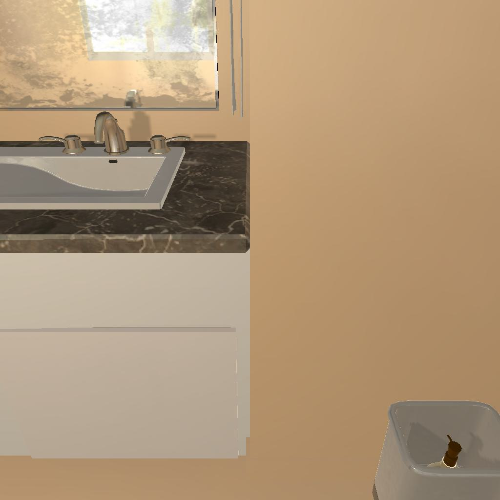

---------------------------------------------------------task: 11---------------------------------------------------------
--------------------------------------------------------------------------------------------------------------------------------------------------------------------
--------------------------------------------------------------------------------------------------------------------------------------------------------------------
Step:--------------------------------------------------------------------------8-------------------------------------------------------------------------------
----------------------------------------
VLM Prompt:
Image1:
Image2:
**Instruction**
1. Analyze the provided images to identify all visible household objects and compare the difference between images (e.h. whether the object is opened or not and taken on hand or not), focusing on those relevant to the task description "clean some soapbar and put it in bathtubbasin."
2. Use the analysis of images and the task hint "The agent must find an object of the desired type, pick it up, go to a sink or a basin, clean the object with a sink or basin, and then find the correct location to place it and put it down there. The agent does not need to use soap bottle or faucet to clean the object, and the agent just needs to do action that is "clean the object with the sink or sink basin"." to answer the question: what is the most reasonable action in the choices for the task description "clean some soapbar and put it in bathtubbasin"?
3. Decide and write the answer using the template: The answer is: (i): , where i is the real number. If there is no desired object in images, search every place based on **Initial Observation** to find the object. And if no one is exactly correct, choose a similar answer.
**Initial Observation**
You are in the middle of a room. Looking quickly around you, you can see bathtub (1), bathtubbasin (1), toilet (1), cabinet (1-2), countertop (1), sink (1), sinkbasin (1), garbagecan (1)
**Answer Choices**
(1): go to bathtub 1
(2): go to bathtubbasin 1
(3): go to toilet 1
(4): go to countertop 1
(5): go to sink 1
(6): go to sinkbasin 1
(7): go to cabinet 2
(8): go to garbagecan 1
(9): open cabinet 1
(10): close cabinet 1
(11): take faucet 1 from cabinet 1
(12): take spraybottle 1 from cabinet 1
(13): take toiletpaper 2 from cabinet 1
(14): take cloth 1 from cabinet 1
(15): take toiletpaper 1 from cabinet 1
(16): take plunger 1 from cabinet 1
(17): take candle 1 from cabinet 1
(18): take scrubbrush 1 from cabinet 1
(19): examine cabinet 1
**Answer**
Let's think step by step by following the instructions.
----------------------------------------
----------------------------------------
Original Response:
First, we identify all visible household objects in the images:
- Image 1: Sink with faucet, countertop, cabinet with drawers, and a small object that looks like a soap bar in the sink basin.
- Image 2: Toilet with a spray bottle on the tank, sink with faucet, countertop, cabinet with drawers, and a small object that looks like a soap bar in the sink basin.
Comparing the two images, we see that the small object resembling a soap bar is present in both images and located in the sink basin. This object is relevant to the task description "clean some soapbar and put it in bathtubbasin."
Based on the task hint, the agent must find the soap bar, clean it in the sink or basin, and then put it in the bathtub basin. The agent does not need to use a soap bottle or faucet for cleaning; just the action "clean the object with the sink or sink basin" is required.
From the initial observation, we know that there is a bathtub basin (1) available, and from the images, we see that there is a soap bar in the sink basin.
Given the task and the options provided, the most reasonable action is to:
- Take the soap bar from the sink basin (which is already there, so we don't need an action to take it).
- Clean the soap bar using the sink basin (which doesn't require a specific action from the choices).
- Put the cleaned soap bar in the bathtub basin (which is our target location).
From the answer choices, the action that corresponds to the final step of putting the soap bar in the bathtub basin is:
(2): go to bathtubbasin 1
The answer is: (2): go to bathtubbasin 1
----------------------------------------
----------------------------------------
>>> Refine Original VLM Response and Get Pure Action: go to bathtubbasin 1
----------------------------------------
-----------------------------------------------------------------
Running time: 15.539528369903564 seconds
Total Money: 4.924950000000003
-----------------------------------------------------------------
-----------------------------------------------------------------
Text Observation:You arrive at loc 1. On the bathtubbasin 1, you see a cloth 2, a faucet 3, and a candle 3.
-----------------------------------------------------------------
UNSUCCEED